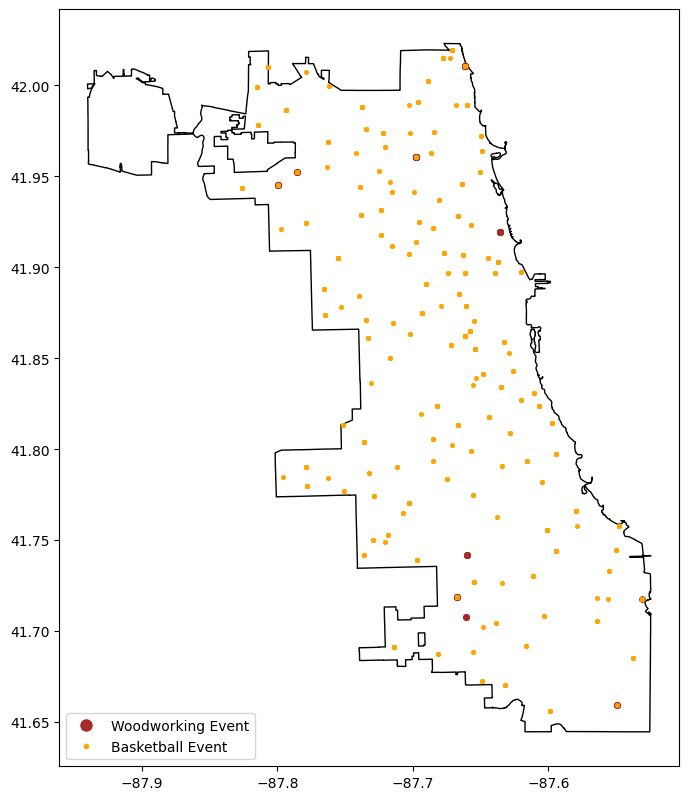
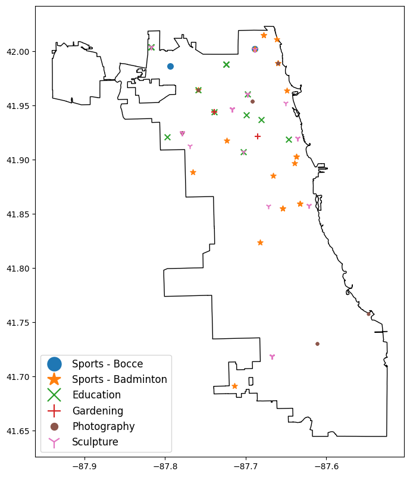
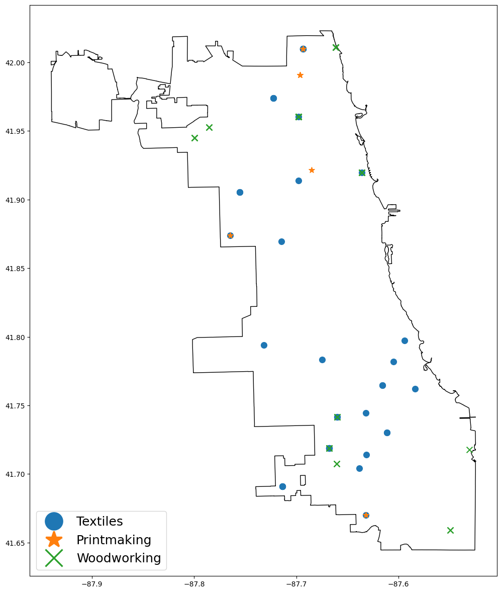

Formatting and Imports
import geopandas as gpd
import matplotlib.pyplot as plt
import pandas as pd
from matplotlib.lines import Line2D
pd.options.display.max_columns = None
pd.options.display.max_colwidth = 150Matt Triano
February 3, 2026
February 13, 2026
Jupyter notebooks are great for developing data products, whether it’s data analysis, data pipelines, or (classical) ML models. The format enables an interactive, iterative workflow where you can incrementally execute snippets of code and immediately seeing results inline. This makes it very easy to incrementally build your analyis and/or data pipeline and then develop that code into reusable and importable functions or classes.
In this post, I’ll show: * an example of this Jupyter-enabled workflow (both the EDA workflow and the tooling development workflow), and * how I set up jupyterlab (including my solutions to jupyterlab’s few annoying quirks)
I’ll break this down into two parts, the EDA (Exploratory Data Analysis) workflow, and then the Development workflow (which will build upon the EDA workflow).
Thanks to python’s robust data science/analysis/engineering ecosystem, you can load a dataset into memory in one line of code and then iteratvely explore loaded datasets, as shown in the cells below.
chicago_boundary = gpd.read_file("https://data.cityofchicago.org/api/geospatial/qqq8-j68g?method=export&format=GeoJSON")
chicago_park_events = gpd.read_file("https://data.cityofchicago.org/api/geospatial/tn7v-6rnw?method=export&format=GeoJSON")
print(chicago_park_events.shape)
display(chicago_park_events.head(2))(7597, 28)| start_date | latitude | zip | description | registration_date | location_notes | restrictions | activity_type | age_range | season | longitude | registration_link | activity_id | end_date | image_link | location_facility | address | category | information_link | title | event_cancelled | type | movie_title | movie_rating | zone | date_notes | fee | geometry | |
|---|---|---|---|---|---|---|---|---|---|---|---|---|---|---|---|---|---|---|---|---|---|---|---|---|---|---|---|---|
| 0 | 2026-01-07 07:00:00 | None | None | January 7, 2026 to March 4, 2026 | 2025-12-10 15:00:00 | None | None | Open | All Ages | None | None | None | 567134 | 2026-03-04 08:00:00 | None | None | None | Sports - Skating | http://apm.activecommunities.com/chicagoparkdistrict/Activity_Search/567134 | Ice Skating - Freestyle Ice (Main Rink) at McFetridge | None | Program | None | None | None | From January 7, 2026 to March 4, 2026 Each Wednesday from 7am to 8am | 72 | None |
| 1 | 2026-01-05 18:50:00 | None | None | January 5, 2026 to February 23, 2026 | 2025-12-10 15:00:00 | None | None | Instruction | All Ages | None | None | None | 567122 | 2026-02-23 19:30:00 | None | None | None | Sports - Skating | http://apm.activecommunities.com/chicagoparkdistrict/Activity_Search/567122 | Ice Skating - Freestyle 5 at McFetridge | None | Program | None | None | None | From January 5, 2026 to February 23, 2026 Each Monday from 6:50pm to 7:30pm | 127 | None |
woodworking_events = chicago_park_events.loc[chicago_park_events["category"] == "Woodworking"]
basketball_events = chicago_park_events.loc[chicago_park_events["category"] == "Sports - Basketball"]
fig, ax = plt.subplots(figsize=(8,10))
ax = chicago_boundary.plot(facecolor="none", ax=ax)
ax = woodworking_events.plot(markersize=15, ax=ax, color="brown")
ax = basketball_events.plot(markersize=7, ax=ax, color="orange")
legend_elements = [
Line2D([0], [0], marker="o", color='w', markerfacecolor="brown", markersize=10, label="Woodworking Event"),
Line2D([0], [0], marker=".", color='w', markerfacecolor="orange", markersize=10, label="Basketball Event"),
]
_ = ax.legend(handles=legend_elements, loc="lower left")
Above, we loaded some data and visualized an aspect of two specific subsets of the data. It’s not too easy to reuse or adapt to explore other subsets, but the notebook format makes it easy to iteratively refactor those experiments into something reusable that’s also much easier to version-control.
Below, I’ve refactored the above experiments into a reusable bit of code that retrieves the data and provides methods to inspect counts of Chicago Park Dept events and map out events.
from typing import Optional
class ChicagoParkEventExplorer:
def __init__(
self,
chicago_boundary: Optional[gpd.GeoDataFrame] = None,
chicago_park_events: Optional[gpd.GeoDataFrame] = None
) -> None:
self.load_chicago_boundary(chicago_boundary)
self.load_chicago_park_events(chicago_park_events)
def load_chicago_boundary(self, df: Optional[gpd.GeoDataFrame] = None) -> None:
if df is not None:
self.chicago_boundary = df.copy()
else:
self.chicago_boundary = gpd.read_file(
"https://data.cityofchicago.org/api/geospatial/qqq8-j68g?"
"method=export&format=GeoJSON"
)
self.chicago_boundary
def load_chicago_park_events(self, df: Optional[gpd.GeoDataFrame] = None) -> None:
if df is not None:
self.chicago_park_events = df.copy()
else:
print("Getting fresh Chicago Parks Dept Events data.")
self.chicago_park_events = gpd.read_file(
"https://data.cityofchicago.org/api/geospatial/tn7v-6rnw?"
"method=export&format=GeoJSON"
)
col_order = [
"activity_id", "title", "description", "category", "activity_type",
"start_date", "end_date", "registration_date", "date_notes", "age_range",
"location_facility", "address", "zip", "fee", "information_link", "type",
"movie_title", "movie_rating", "image_link", "registration_link",
"event_cancelled", "season", "zone", "restrictions", "location_notes",
"latitude", "longitude", "geometry"
]
self.chicago_park_events = self.chicago_park_events[col_order].copy()
self.chicago_park_events = self.chicago_park_events.convert_dtypes()
@property
def event_category_counts(self) -> pd.Series:
return self.chicago_park_events["category"].value_counts(dropna=False)
def plot_events(self, event_categories: list[str], fig_width: int = 8) -> plt.Axes:
markers = ["o", "*", "x", "+", ".", "1", "2", "3", "4"]
cmap = plt.get_cmap("tab10", len(markers))
colors = [cmap(i) for i in range(len(markers))]
if len(event_categories) > len(markers):
print(f"Too many categories entered, showing the first {len(markers)}")
fig, ax = plt.subplots(figsize=(fig_width, fig_width*1.618))
ax = self.chicago_boundary.plot(facecolor="none", ax=ax)
legend_elements = []
for i, event_category in enumerate(event_categories):
df = self.chicago_park_events.loc[
self.chicago_park_events["category"] == event_category
].copy()
ax = df.plot(
marker=markers[i], markersize=fig_width*6, color=colors[i], ax=ax
)
legend_elements.append(Line2D(
[0], [0], marker=markers[i], color="w", markerfacecolor=colors[i],
markeredgecolor=colors[i], markersize=fig_width,
markeredgewidth=fig_width*0.2, label=event_category
))
_ = ax.legend(
handles=legend_elements, loc="lower left", fontsize=fig_width*1.5,
markerscale=2
)
return ax
event_explorer = ChicagoParkEventExplorer(chicago_boundary, chicago_park_events)
print(event_explorer.chicago_park_events.shape)
event_explorer.chicago_park_events.head(2)(7597, 28)| activity_id | title | description | category | activity_type | start_date | end_date | registration_date | date_notes | age_range | location_facility | address | zip | fee | information_link | type | movie_title | movie_rating | image_link | registration_link | event_cancelled | season | zone | restrictions | location_notes | latitude | longitude | geometry | |
|---|---|---|---|---|---|---|---|---|---|---|---|---|---|---|---|---|---|---|---|---|---|---|---|---|---|---|---|---|
| 0 | 567134 | Ice Skating - Freestyle Ice (Main Rink) at McFetridge | January 7, 2026 to March 4, 2026 | Sports - Skating | Open | 2026-01-07 07:00:00 | 2026-03-04 08:00:00 | 2025-12-10 15:00:00 | From January 7, 2026 to March 4, 2026 Each Wednesday from 7am to 8am | All Ages | <NA> | <NA> | <NA> | 72 | http://apm.activecommunities.com/chicagoparkdistrict/Activity_Search/567134 | Program | None | None | <NA> | <NA> | <NA> | <NA> | <NA> | None | <NA> | <NA> | <NA> | None |
| 1 | 567122 | Ice Skating - Freestyle 5 at McFetridge | January 5, 2026 to February 23, 2026 | Sports - Skating | Instruction | 2026-01-05 18:50:00 | 2026-02-23 19:30:00 | 2025-12-10 15:00:00 | From January 5, 2026 to February 23, 2026 Each Monday from 6:50pm to 7:30pm | All Ages | <NA> | <NA> | <NA> | 127 | http://apm.activecommunities.com/chicagoparkdistrict/Activity_Search/567122 | Program | None | None | <NA> | <NA> | <NA> | <NA> | <NA> | None | <NA> | <NA> | <NA> | None |
category
Walking 55
Specialized 52
Textiles 49
Theater 41
Sports - Cheerleading 41
Painting 40
Drawing 40
Aerobics 36
Sports - Track & Field 34
Self-Defense 32
Sports - Archery 30
Sports - Table Tennis 26
Sports - Baseball 25
Sports, Girls P.L.A.Y. Events 24
Sports - Badminton 21
Sports - Football 20
Sports 19
Out of School Programs - After School 17
Sports - Bowling 16
Photography 14
Name: count, dtype: Int64
There are more yoga events than I expected, and it looks like it’s a common event at Chicago’s beaches (which are all parkland thanks to Daniel Burnham’s visionary 1909 “Plan of Chicago”).

Hmm, that swath of textile events from Beverly to South Shore is kind of interesting. I wonder what the story behind that is (more instructors? more community interest?)
When our tooling is developed enough to version control, we can mode it to a .py file and import it into this or subsequent notebooks by adding the containing directory to the Python Path.
Directory we're adding to the python path (so we can import from it):
/home/matt/projects/blogs/quarto_blog/posts/020_uv_jupyterlab_setupJupyter notebooks default to only executing imports once, so changes made to code in a local .py file won’t be accessible in your notebook unless you configure your notebook to automatically reload changes.
Getting fresh Chicago Parks Dept Events data.
(7597, 28)| activity_id | title | description | category | activity_type | start_date | end_date | registration_date | date_notes | age_range | location_facility | address | zip | fee | information_link | type | movie_title | movie_rating | image_link | registration_link | event_cancelled | season | zone | restrictions | location_notes | latitude | longitude | geometry | |
|---|---|---|---|---|---|---|---|---|---|---|---|---|---|---|---|---|---|---|---|---|---|---|---|---|---|---|---|---|
| 0 | 546961 | Park Kids - Fall Winter Spring at Haines School | August 18, 2025 to June 4, 2026 | After School | Activity Package | 2025-08-18 14:45:00 | 2026-06-04 18:00:00 | 2025-08-05 14:00:00 | From August 18, 2025 to June 4, 2026 Each Monday,Tuesday,Wednesday,Thursday,Friday from 2:45pm to 6pm | Youth | <NA> | <NA> | <NA> | 543 | http://apm.activecommunities.com/chicagoparkdistrict/Activity_Search/546961 | Program | None | None | <NA> | <NA> | <NA> | <NA> | <NA> | None | <NA> | <NA> | <NA> | None |
| 1 | 550133 | Pickleball at Sauganash | January 5, 2026 to March 9, 2026 | Sports - Pickleball | Instruction | 2026-01-05 15:30:00 | 2026-03-09 16:30:00 | 2025-12-08 15:00:00 | From January 5, 2026 to March 9, 2026 Each Monday from 3:30pm to 4:30pm | Youth | Sauganash Park | 5861 N. Kostner Ave. | 60646 | 21 | http://apm.activecommunities.com/chicagoparkdistrict/Activity_Search/550133 | Program | None | None | <NA> | <NA> | <NA> | <NA> | <NA> | None | <NA> | 41.9882037 | -87.7372685 | POINT (-87.73727 41.9882) |
I’ve worked through a number of different setups, but I’ve used this setup for two years for my general analysis and development work without any frustrations.
I use the excellent uv python project manager to manage dependencies and run the server.
I have all of my projects in a directory ~/projects, and I make a directory for my jupyter environment.
I can set up the project, install dependencies, and generate a config file via
mkdir -p ~/projects/jupyter && cd ~/projects/juypyter
uv init
uv add jupyterlab geopandas matplotlib
uv run jupyter server --generate-configAnd I can start up a server and access it via the machine I’m ssh-ing in from via
cd ~/projects
uv --project /jupyter run jupyterlab --ip 0.0.0.0 --no-browsertotal 580
drwxrwxr-x 4 matt matt 4096 Dec 6 12:39 .
drwxrwxr-x 61 matt matt 4096 Jan 30 22:46 ..
drwxrwxr-x 7 matt matt 4096 Feb 13 12:32 .git
-rw-rw-r-- 1 matt matt 109 Dec 6 12:39 .gitignore
-rw-rw-r-- 1 matt matt 85 Dec 6 12:39 main.py
-rw-rw-r-- 1 matt matt 498 Feb 7 18:51 pyproject.toml
-rw-rw-r-- 1 matt matt 5 Dec 6 12:39 .python-version
-rw-rw-r-- 1 matt matt 0 Dec 6 12:39 README.md
-rw-rw-r-- 1 matt matt 561107 Feb 7 18:51 uv.lock
drwxrwxr-x 7 matt matt 4096 Jan 17 00:50 .venvJupyter notebooks default to automatically creating a hidden directory named .ipynb_checkpoints in whatever directory a the notebook is in, and in that directory is periodically autosaves backups of a notebook. In development workflows (where something automatically detects files through subdirectories), this can be particularly annoying.
Fortunately, we can reconfigure that. In the ~/.jupyter/jupyter_server_config.py file that we generated above (via the uv run jupyter server --generate-config command), add these lines around the c = get_config() line to create a directory to shunt checkpoint files to and to actually route checkpoint files there.
from pathlib import Path
# Configuration file for jupyter-server.
CHECKPOINT_DIR = Path("~").joinpath("projects", ".temp", ".jupyter", ".checkpoints").expanduser()
if not CHECKPOINT_DIR.is_dir():
CHECKPOINT_DIR.mkdir(parents=True)
c = get_config() #noqa
c.FileCheckpoints.checkpoint_dir = str(CHECKPOINT_DIR)
The other annoying jupyter default is that hidden files (like .env files) are not displayed in the file browser. To correct this, uncomment the ...ContentsManager.allow_hidden lines and make sure they’re set to True.
1048:c.ContentsManager.allow_hidden = True
1175:c.FileContentsManager.allow_hidden = True
1263:c.AsyncContentsManager.allow_hidden = True
1339:c.AsyncFileContentsManager.allow_hidden = TrueThat’s basically all it takes to get up and running. After the above setup, you only have to run this (then copy the displayed URL to a browser).
cd ~/projects
uv --project /jupyter run jupyterlab --ip 0.0.0.0 --no-browserAnd to install new dependencies, just use this pattern. It will be accessible in the default Python 3 (ipykernel) notebook option.
cd ~/projects/jupyter
uv add <whatever dependencies you need>